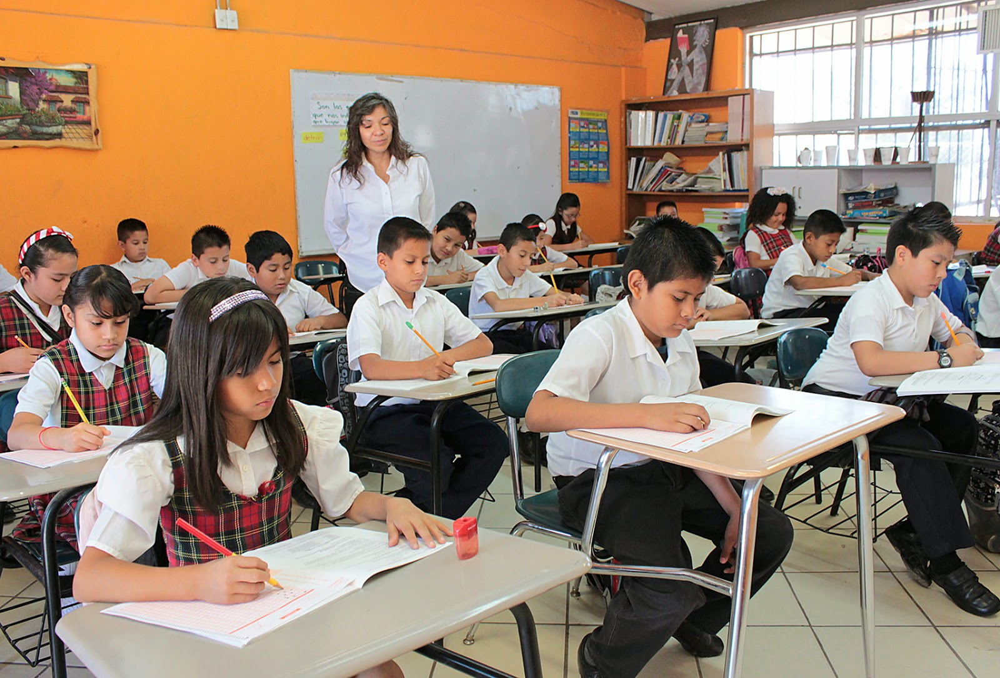

Bueno, pre básica y básica osea kinder y escuela las estuve estudiando en una escuela de mi aldea llamada Rural Mixta Lempira(RML), luego séptimo y octavo grado estuve en un colegio de Santa Rosa de Copan llamado Instituto Tecnico Industrial Copan(ITIC), noveno y decimo grado en un colegio de San Juan de Opoa llamado Instituto Monseñor Luis alfonos Santos(IMLAS), Oncevo grado en un colegio de Choluteca llamado Jose Cecilio del Valle(JCV).
